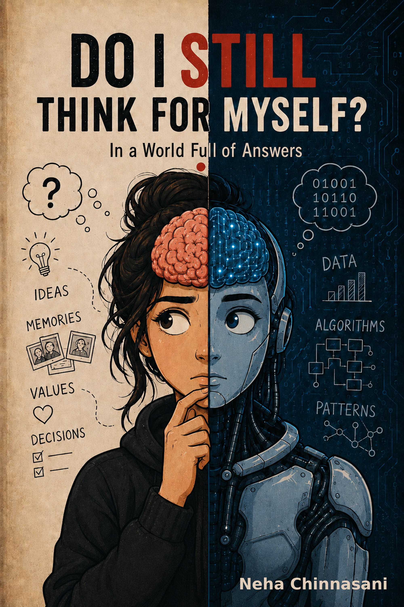
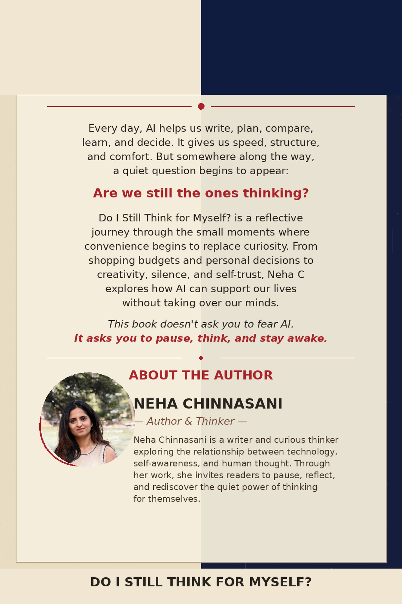

A reflective journey through AI and self-trust
Do I Still Think for Myself?
In a World Full of Answers
Every day, AI helps us write, plan, compare, learn, and decide. This book asks a quieter question: are we still the ones thinking?

Read Online
The full book is ready to read here.
Share this website link with readers, or share the PDF link directly when you want the book to open in a clean browser reader.

About the Book
Are we still the ones thinking?
Do I Still Think for Myself? follows the small moments where convenience begins to replace curiosity. From shopping budgets and personal decisions to creativity, silence, and self-trust, Neha Chinnasani explores how AI can support our lives without taking over our minds.
This book doesn't ask you to fear AI. It asks you to pause, think, and stay awake.
Reader Reactions
What readers are saying